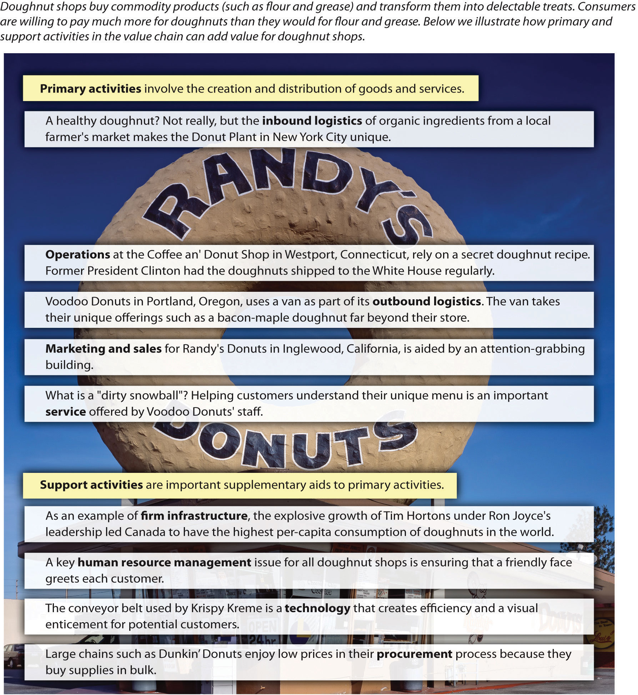

Figure 4.10 Adding Value within a Value Chain
Image courtesy of Carol M. Highsmith, http://commons.wikimedia.org/wiki/File:Randy%27s_donuts1_edit1.jpg.
When executives choose strategies, an organization’s resources and capabilities should be examined alongside consideration of its value chainA tool that charts the path by which products and services are created and eventually sold to customers.. A value chain charts the path by which products and services are created and eventually sold to customers.Porter, M. E. 1985. Competitive advantage: Creating and sustaining superior performance. New York, NY: Free Press. The term value chain reflects the fact that, as each step of this path is completed, the product becomes more valuable than it was at the previous step (Figure 4.10 "Adding Value within a Value Chain"). Within the lumber business, for example, value is added when a tree is transformed into usable wooden boards; the boards created from a tree can be sold for more money than the price of the tree.
The Value Chain
Reproduced with permission from [citation redacted per publisher request].
Value chains include both primary and secondary activities. Primary activitiesAn action directly involved in the creation and distribution of goods and services. are actions that are directly involved in creating and distributing goods and services. Consider a simple illustrative example: doughnut shops. Doughnut shops transform basic commodity products such as flour, sugar, butter, and grease into delectable treats. Value is added through this process because consumers are willing to pay much more for doughnuts than they would be willing to pay for the underlying ingredients.
There are five primary activities. Inbound logisticsThe arrival of raw materials. refers to the arrival of raw materials. Although doughnuts are seen by most consumers as notoriously unhealthy, the Doughnut Plant in New York City has carved out a unique niche for itself by obtaining organic ingredients from a local farmer’s market. OperationsThe production process of a good or service. refers to the actual production process, while outbound logistics tracks the movement of a finished product to customers. One of Southwest Airlines’ unique capabilities is moving passengers more quickly than its rivals. This advantage in operations is based in part on Southwest’s reliance on one type of airplane (which speeds maintenance) and its avoidance of advance seat assignments (which accelerates the passenger boarding process).
Attracting potential customers and convincing them to make purchases is the domain of marketing and salesActivities used to attract potential customers and convince them to make purchases.. For example, people cannot help but notice Randy’s Donuts in Inglewood, California, because the building has a giant doughnut on top of it. Finally, serviceThe extent to which a firm provides assistance to its customers. refers to the extent to which a firm provides assistance to their customers. Voodoo Donuts in Portland, Oregon, has developed a clever website (voodoodoughnut.com) that helps customers understand their uniquely named products, such as the Voodoo Doll, the Texas Challenge, the Memphis Mafia, and the Dirty Snowball.
Secondary activitiesAn action not directly involved in the evolution of a product but instead provides important underlying support for a primary activity. are not directly involved in the evolution of a product but instead provide important underlying support for primary activities. Firm infrastructureHow the firm is organized and led by executives. refers to how the firm is organized and led by executives. The effects of this organizing and leadership can be profound. For example, Ron Joyce’s leadership of Canadian doughnut shop chain Tim Hortons was so successful that Canadians consume more doughnuts per person than all other countries. In terms of resource-based theory, Joyce’s leadership was clearly a valuable and rare resource that helped his firm prosper.
Also important is human resource managementIncludes activities involved in recruiting, training, and compensating employees., which involves the recruitment, training, and compensation of employees. A recent research study used data from more than twelve thousand organizations to demonstrate that the knowledge, skills, and abilities of a firm’s employees can act as a strategic resource and strongly influence the firm’s performance.Crook, T. R., Todd, S. Y., Combs, J. G., Woehr, D. J., & Ketchen, D. J. 2011. Does human capital matter? A meta-analysis of the relationship between human capital and firm performance. Journal of Applied Psychology, 96(3), 443–456. Certainly, the unique level of dedication demonstrated by employees at Southwest Airlines has contributed to that firm’s excellent performance over several decades.
TechnologyThe use of computerization and telecommunications to support primary activities. refers to the use of computerization and telecommunications to support primary activities. Although doughnut making is not a high-tech business, technology plays a variety of roles for doughnut shops, such as allowing customers to use credit cards. ProcurementThe process of negotiating for and purchasing raw materials. is the process of negotiating for and purchasing raw materials. Large doughnut chains such as Dunkin’ Donuts and Krispy Kreme can gain cost advantages over their smaller rivals by purchasing flour, sugar, and other ingredients in bulk. Meanwhile, Southwest Airlines has gained an advantage over its rivals by using futures contracts within its procurement process to minimize the effects of rising fuel prices.
“Time is money!” warns a famous saying. This simple yet profound statement suggests that organizations that quickly complete their work will enjoy greater profits, while slower-moving firms will suffer. The belief that time is money has encouraged the modern emphasis on supply chain management. A supply chainA system of people, activities, information, and resources involved in creating a product and moving it to the customer. is a system of people, activities, information, and resources involved in creating a product and moving it to the customer. A supply chain is a broader concept than a value chain; the latter refers to activities within one firm, while the former captures the entire process of creating and distributing a product, often across several firms.
Competition in the twenty-first century requires an approach that considers the supply chain concept in tandem with the value-creation process within a firm: best value supply chainsSupply chains that focus on the total value added to the customer as opposed to individual outcomes, such as speed or cost.. These chains do not fixate on speed or on any other single metric. Instead, relative to their peers, best value supply chains focus on the total value added to the customer.
Creating best value supply chains requires four components. The first is strategic supply chain managementThe use of supply chains as a means to create competitive advantages and enhance firm performance.—the use of supply chains as a means to create competitive advantages and enhance firm performance. Such an approach contradicts the popular wisdom centered on the need to maximize speed. Instead, there is recognition that the fastest chain may not satisfy customers’ needs. Best value supply chains strive to excel along four measures. Speed (or “cycle time”)The time duration from initiation to completion of the production and distribution process. is the time duration from initiation to completion of the production and distribution process. QualityThe relative reliability of supply chain activities. refers to the relative reliability of supply chain activities. Supply chains’ efforts at managing costThe price paid for supply chain inputs. involve enhancing value by either reducing expenses or increasing customer benefits for the same cost level. FlexibilityA supply chain’s responsiveness to changes in customers’ needs. refers to a supply chain’s responsiveness to changes in customers’ needs. Through balancing these four metrics, best value supply chains attempt to provide the highest level of total value added.
The value of strategic supply chain management is reflected in how firms such as Walmart have used their supply chains as competitive weapons to gain advantages over peers. Walmart excels in terms of speed and cost by locating all domestic stores within one day’s drive of a warehouse while owning a trucking fleet. This creates distribution speed and economies of scale that competitors simply cannot match. When Kmart’s executives decided in the late 1990s to compete head-to-head with Walmart on price, Walmart’s sophisticated logistics system enabled it to easily withstand the price war. Unable to match its rival’s speed and costs, Kmart soon plunged into bankruptcy. Walmart’s supply chains also possess strong quality and flexibility. When Hurricane Katrina devastated the Gulf Coast in 2005, Walmart used not only its warehouses and trucks but also its satellite technology, radio frequency identification (RFID), and global positioning systems to quickly divert assets to affected areas. The result was that Walmart emerged as the first responder in many towns and provided essentials such as drinking water faster than local and federal governments could.
Meanwhile, failing to manage a supply chain effectively causes serious harm. For example, in 2003 Motorola was unable to meet demand for its new camera phones because it did not have enough lenses available. Also, firms whose supply chains were centered in the Port of Los Angeles collectively lost more than $2 billion a day during a 2002 workers’ strike. In terms of stock price, firms’ market value erodes by an average of 10 percent following the announcement of a major supply chain problem.
The second component is agilityThe supply chain’s relative capacity to act rapidly in response to dramatic changes in supply and demand., the supply chain’s relative capacity to act rapidly in response to dramatic changes in supply and demand.Lee, H. L. 2004, October. The triple-A supply chain. Harvard Business Review, 83, 102–112. Agility can be achieved using buffers. Excess capacity, inventory, and management information systems all provide buffers that better enable a best value supply chain to service and to be more responsive to its customers. Rapid improvements and decreased costs in deploying information systems have enabled supply chains in recent years to reduce inventory as a buffer. Much popular thinking depicts inventory reduction as a goal in and of itself. However, this cannot occur without corresponding increases in buffer capacity elsewhere in the chain, or performance will suffer. A best value supply chain seeks to optimize the total costs of all buffers used. The costs of deploying each buffer differs across industries; therefore, no solution that works for one company can be directly applied to another in a different industry without adaptation.
Agility in a supply chain can also be improved and achieved by colocating with the customer. This arrangement creates an information flow that cannot be duplicated through other methods. Daily face-to-face contact for supply chain personnel enables quicker response times to customer demands due to the speed at which information can travel back and forth between the parties. Again, this buffer of increased and improved information flows comes at an expense, so executives seeking to build a best value supply chain will investigate the opportunity and determine whether this action optimizes total costs.
AdaptabilityA willingness and capacity to reshape supply chains when necessary. refers to a willingness and capacity to reshape supply chains when necessary. Generally, creating one supply chain for a customer is desired because this helps minimize costs. Adaptable firms realize that this is not always a best value solution, however. For example, in the defense industry, the US Army requires one class of weapon simulators to be repaired within eight hours, while another class of items can be repaired and returned within one month. To service these varying requirements efficiently and effectively, Computer Science Corporation (the firm whose supply chains maintain the equipment) must devise adaptable supply chains. In this case, spare parts inventory is positioned in proximity to the class of simulators requiring quick turnaround, while the less-time-sensitive devices are sent to a centralized repair facility. This supply chain configuration allows Computer Science Corporation to satisfy customer demands while avoiding the excess costs that would be involved in localizing all repair activities.
In situations in which the interests of one firm in the chain and the chain as a whole conflict, most executives will choose an option that benefits their firm. This creates a need for alignment among chain members. AlignmentCreating consistency in the interests of all participants in a supply chain. refers to creating consistency in the interests of all participants in a supply chain. In many situations, this can be accomplished through carefully writing incentives into contracts. Collaborative forecasting with suppliers and customers can also help build alignment. Taking the time to sit together with participants in the supply chain to agree on anticipated business levels permits shared understanding and rapid information transfers between parties. This is particularly valuable when customer demand is uncertain, such as in the retail industry.This section of the chapter is adapted from Ketchen, D. J., Rebarick, W., Hult, G. T., & Meyer, D. 2008. Best value supply chains: A key competitive weapon for the 21st century. Business Horizons, 51, 235–243.